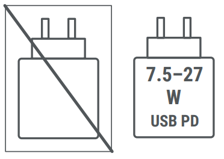

Safety, and regulatory information: g.co/pixel/safety or Settings
This guide includes the basic safety guidelines in the printed Safety & Warranty booklet that comes with your device. It also includes additional safety, regulatory, and warranty information about the device.
Safety, and regulatory information: g.co/pixel/safety or Settings  About phone
About phone  Safety & regulatory manual
Safety & regulatory manual
Warranty details for your country of purchase, including instructions for making a claim: g.co/pixel/warranty
Electronic regulatory labels (and specific absorption rate (SAR) values) for your device: Settings  About phone
About phone  Regulatory labels
Regulatory labels
Eco-design (energy performance) information: g.co/ecodesign
Help with your device: g.co/pixel/help
 |
WARNING: HEALTH AND SAFETY INFORMATION; READ BEFORE USE TO REDUCE THE RISK OF PERSONAL INJURY, DISCOMFORT, PROPERTY DAMAGE, INCLUDING DAMAGE TO YOUR DEVICE, ACCESSORIES OR ANY CONNECTED DEVICES, AND OTHER POTENTIAL HAZARDS |
Handle your device with care. You may damage the device or the batteries if you disassemble, drop, bend, burn, crush or puncture your device. Do not use a device with a damaged enclosure, a cracked screen or some other form of physical damage. Using a damaged device may cause overheating or injury. Do not expose your device to liquids, which can cause a short circuit and overheating. If your device gets wet, do not attempt to dry it using an external heat source.
Your device works best in ambient temperatures between 32° and 95° F (0° and 35° C), and should be stored between ambient temperatures of -4° and 113° F (-20° and 45° C). Do not expose your device to temperatures above 113° F (45° C), such as on a car dashboard or near a heating vent, as this may damage the device, overheat the battery, or pose a risk of fire. Keep your device away from heat sources and out of direct sunlight. If your device becomes too hot, disconnect it from its power source if it is plugged in, move it to a cooler place and do not use it until it has cooled. Your device is designed to work best at an altitude of up to 16404 ft (5000m). Do not open or close your device in extreme cold temperatures of -4° F (-20° C) or lower, as it may damage the device.
Use of your device in certain modes, such as gaming, taking videos, using a flashlight setting, or virtual reality or augmented reality features, can cause it to generate more heat than it would under normal operating conditions. This may cause your device to operate in a reduced-power mode or temporarily shut down. Use extra care when operating the device in these modes. For more information on risks associated with prolonged heat exposure, please refer to the Prolonged Heat Exposure section below.
Self service repair is not recommended unless you are an adult with the technical expertise to safely repair electronic devices. If you choose to perform self repair, you agree to assume the risk associated with such repair. Use caution if engaging in repair. Opening and/or repairing your device can present electric shock, device damage, fire and personal injury risks and other hazards. Disassembling the device may result in loss of water or dust resistance or cause injury or damage to your device. For example, the device contains a laser that can be damaged during disassembly which might expose you to hazardous laser emissions which are not visible.
Contact customer service if the device is not working properly or has been damaged. For more information, visit g.co/pixelcare.
Be sure the device and its power adapter are well ventilated when in use or charging. Using damaged cables, or power adapters, or charging when moisture is present, can cause fire, electric shock, injury, or damage to the device or other property. Only charge your device on a hard surface. Do not charge your device on a soft surface, such as a couch or bed, or when it’s wet. Avoid charging your device in direct sunlight. Avoid sleeping on a device, power adapter, or wireless charger, or placing them under a blanket, pillow, or your body, when it’s connected to a power source as these situations can result in personal injury or fire.
When charging the device, make sure the power adapter is plugged into a power outlet near the device and is easily accessible. Do not force this power adapter and other plugs or power adapters to a power outlet if space is not sufficient to accommodate both. When disconnecting the power adapter from a power outlet, pull on the adapter, never on the charging cable. Do not twist or pinch the cable, and do not force a connector into a port. If you receive a message while charging that instructs you to unplug the charging device or power adapter, disconnect the charging device or power adapter. Before attempting to charge again, make sure both the charging cable connector and the device's charging port are dry and clear of any objects. As the battery in the device ages, you may notice changes in charging performance and battery capacity over time. Batteries are consumable components that age over time and will eventually last fewer hours between charges.
Only charge your device with a USB-C PD compliant charger or compatible charging accessories available on the Google Store or at Google authorized resellers (look for Google’s “made for” badge). The AC adapter must be certified with a Limited Power Source output per IEC 60950-1 and/or classified PS2 per IEC 62368-1, rated: 5 Volts DC, maximum 3 Amp; 9 Volts DC, maximum 3 Amp; when used with USB PD enabled AC adapter, and up to 11 Volts DC, maximum 3 Amp for USB PD 3.0 PPS enabled AC adapter and qualified per CTIA Certification Requirements for Battery System Compliance to IEEE 1725. Failure to use compatible charging accessories can cause fire, electric shock, injury, or damage to the device and the accessories.
Your device may be charged with a Qi-compliant or Google approved wireless charger. Do not place other metallic or magnetic objects between the wireless charger and your device, as this could cause heating of the other object or cause your device not to charge properly. Examples of such objects include coins, jewelry, SIM tray tools and credit cards. If using a device case that is metallic or magnetic (except Qi2 compatible cases), remove the case prior to wireless charging as this may cause the device or charger to overheat or may interfere with charging.
The device and its charger generate heat during normal operation and comply with applicable surface temperature standards and limits. Avoid prolonged skin contact when the device is in use or charging because exposing skin to hot surfaces for a long period of time may cause discomfort or burns. Do not sleep on or with your device or its power adapter, or cover them with a blanket or pillow. Be aware of this issue if you have a physical condition that affects your ability to detect heat against your skin.
This device is not a toy. Your device may contain (or may come with) small parts, plastic, cables, glass, or metal elements, and parts with sharp edges that may cause an injury or create a choking or strangulation hazard. Children have strangled on cords and cables. Keep the device and its accessories, including cords and cables, out of the reach of children (more than 3 feet (0.9 meters) away) and do not allow them to play with the device and its accessories. They could hurt themselves or others, or could accidentally damage the device. Seek medical attention immediately if small parts are swallowed or injury occurs.
 |
Prolonged exposure to loud sounds (including music) can cause hearing loss. To prevent possible hearing damage, avoid listening at high volume for prolonged periods of time. Continued exposure to high volumes and background noise can make loud sounds seem quieter than they actually are. Check the volume before using headphones or earphones. |
General instructions of use: This device contains rechargeable lithium-ion batteries, which are sensitive components that can cause injury if damaged. Google recommends that you seek professional assistance for any device repairs. Contact Google, a Google service provider, or an independent repair professional to repair your device unless you are an adult and have the technical experience to self-repair your electronic device as set forth at g.co/pixel/contact. Do not open, crush, heat above 113° F (45° C), or incinerate the battery.
Self Service Repairs: For instructions on how to repair your device, visit g.co/pixelrepair. Your device’s battery should only be replaced to extend the product life. If you choose to perform self repair, you agree to assume the risk associated with such repair. Use caution if engaging in repair. Opening and/or repairing your device can present electric shock, device damage, fire and personal injury risk, and other hazards. Use authentic Google replacement parts, if available in your region. Use of a non-qualified battery and improper disposal may present a risk of fire, explosion, leakage, and/or other hazards. Do not modify or remanufacture/refurbish the battery, puncture or attempt to insert objects into the battery, immerse or expose the battery to water or other liquids, or expose the battery to fire, excessive heat, and/or other hazards.
This device comes with batteries that have proper certifications. In addition, the batteries comply with IEEE 1725 standard.


Model numbers: GU0NP
Google LLC
1600 Amphitheatre Parkway, Mountain View, CA 94043, United States
g.co/regulatory
Battery Model ID: G3M28
Weight: 47 g, Capacity: 3593 mAh, RECHARGEABLE, Lithium-Ion, Extinguishing agent: Dry powder, CO2, Hazardous Substances: Ethyl propionate, Propylene Carbonate, 1,3-propanesultone, Critical Raw Materials: Bauxite, Cobalt, Copper, Fluorspar, Graphite, Light Rare Earth Elements, Lithium, Nickel, Phosphate Rock, Phosphorus, Made in China
Battery Model ID: GU46C
Weight: 19 g, Capacity: 1326 mAh, RECHARGEABLE, Lithium-Ion, Extinguishing agent: Dry powder, CO2, Hazardous Substances: Ethyl propionate, Propylene Carbonate, 1,3-propanesultone, Critical Raw Materials: Bauxite, Cobalt, Copper, Fluorspar, Graphite, Light Rare Earth Elements, Lithium, Nickel, Phosphate Rock, Phosphorus, Made in China
Dispose of and transport your device, batteries and accessories according to local environmental and transportation regulations. Do not improperly transport them or dispose of them in normal household waste. Improper disposal or transport may lead to fire, explosion, and/or other hazards. Do not open, crush, heat above 113° F (45° C), or incinerate. For more information on recycling your device, batteries and accessories, visit g.co/HWRecyclingProgram.
To prevent damage to your device parts or internal circuits, do not use or store the device or its accessories in dusty, smoky, damp, or dirty environments, or near magnetic fields. Keep it away from heat sources and out of direct sunlight. Do not leave your device inside a vehicle or in places where the temperature may exceed 113° F (45° C), such as on a car dashboard, window sill, near a heating vent, or behind glass that is exposed to direct sunlight or strong ultraviolet light for extended periods of time. This may damage the device, overheat the battery, or pose a risk of fire or explosion.
Do not charge, use, store, or transport your device where flammables or explosives are stored (e.g., in gas stations, fuel depots, or chemical plants). Do not use your device where blasting operations are in progress, or in potentially explosive atmospheres such as fuelling areas, fuel storehouses, below deck on boats, fuel, or chemical transfer or storage areas, and in areas where the air contains chemicals, vapors, or particles (such as grain, dust, or metal powders). Sparks in such areas could cause an explosion or fire resulting in bodily injury or even death. Observe all notices and signs where these hazards might exist.
Your device can access mapping and navigation services. Maps and navigation depend on a working data connection and location services, and may not be available at all times or in all areas. Maps and directions may be inaccurate and actual conditions may differ from the map, data, traffic, directions, content and other results. Carefully review directions, follow all applicable traffic laws and signs, exercise your independent judgment and apply common sense, and use mapping and navigation services at your own risk. You are responsible at all times for your conduct and its consequences. Navigation with AR requires up to date Google Street View imagery and bright outdoor light, and isn’t available in India.
Using your device when performing certain activities can distract you and may cause a dangerous situation for you or others. To reduce the risk of accidents (and because it’s prohibited by law in many places), do not use your device while driving, bicycling, or while operating machinery, and do not use it while engaging in any activities that have potentially serious consequences. Follow local laws about using mobile devices, headphones, and helmets.
This device has been evaluated and meets the applicable regulatory requirements for exposure to radio waves and is designed and manufactured not to exceed the applicable emission limits for exposure to radio frequency (RF) energy.
In the countries where the Specific Absorption Rate (SAR) limit is 1.6 W/kg averaged over one gram of tissue, the highest SAR values for this device type are 0.97 W/kg when used against head with no separation, 1.19 W/kg against body with 0.5 cm (0.2 in) separation, and 1.14 W/kg against body with 1.0 cm (0.4 in) separation. Body-worn operations are restricted to protective cases, holsters, armbands, or similar accessories that have no metallic component in the assembly and must provide at least 1.0 cm (0.4 in) separation between the device and the user's body. In the countries where the Specific Absorption Rate (SAR) limit is 2.0 W/kg averaged over ten grams of tissue, the highest SAR values for this device type are 0.99 W/kg when used against head with no separation and 1.39 W/kg against body with 5 mm (0.2 in) separation.
You can find the SAR values applicable to each of those jurisdictions on your device: Settings  About phone
About phone  Regulatory labels.
Regulatory labels.
To reduce exposure to RF energy, use a hands-free option, such as the built-in speakerphone, headphones, or other similar accessories. Ensure that the device accessories, such as a device case and device holster, are not composed of metal components. Keep the device away from your body to meet the distance requirement.
You can find additional information about SAR at the following pages:
fcc.gov
icnirp.org
ec.europa.eu
dot.gov.in
Observe rules that prohibit the use of wireless technology (e.g. cellular or Wi-Fi). Your device is designed to comply with regulations governing radio frequency emissions but use of wireless devices can negatively affect other electronic equipment. For example, while flying in an aircraft or immediately before boarding, use your wireless device only according to instructions provided by the airline. Use of a wireless device in an aircraft may disrupt wireless networks, present a hazard to aircraft operation, or be illegal. You may be able to use your device in airplane mode.
When the use of Ultra Wideband is prohibited in your region, such as while in an aircraft, Ultra Wideband can be turned off by turning on Airplane mode. Turn on Airplane mode by going to Quick Settings  Tap Airplane mode. Airplane mode can also be turned on in Settings
Tap Airplane mode. Airplane mode can also be turned on in Settings  Network & internet
Network & internet  Toggle Airplane mode. In the US, UWB devices may not be employed for the operation of toys. Operation onboard an aircraft, a ship or a satellite is prohibited.
Toggle Airplane mode. In the US, UWB devices may not be employed for the operation of toys. Operation onboard an aircraft, a ship or a satellite is prohibited.
Wireless devices may not be reliable for emergency communications. This device operates using radio signals and cannot guarantee that it will establish or maintain a connection in all conditions. Your device is also powered by rechargeable batteries that may be affected by temperature, use, damage, and other conditions. Never rely solely on any wireless phone for emergency communications. While some jurisdictions transmit emergency information over wireless networks, your device may not always receive these communications depending upon network connectivity or other factors. Access to some features and emergency information or communications may not be available in all areas or languages. To initiate an emergency call, you can press the power button and the volume up button at the same time. The screen will then show the emergency call button. Press this button to make the emergency call.
Your device uses radios and other components that emit electromagnetic fields, and also contains magnets. These electromagnetic fields and magnets may interfere with medical devices, such as pacemakers and other implanted medical devices. Always keep the device and its charger at a safe distance away from the medical device. If you have questions about using your Google device with or near your medical device, consult your healthcare provider before using your device. If you suspect your device is interfering with your medical device, turn off your Google device and consult your physician for information specific to your medical device.
Switch off your wireless device when requested to do so in hospitals, clinics or health care facilities. These requests are designed to prevent possible interference with sensitive medical equipment.
Your device and its pedometer, sleep, exercise, heart rate, and associated fitness application functions are not medical devices and are intended for information purposes only. They are not designed or intended for use in the diagnosis of disease or other conditions, or in the cure, monitoring, mitigation, treatment, or prevention of disease or other conditions.
The LEDs visible on your device are safe under reasonably foreseeable conditions per the requirements in IEC 62471. However, it is recommended that you do not direct the LEDs at anyone’s eyes.
Some people may experience reactions to materials, such as nickel, found in items that are in extended contact with the skin. Stop use of the phone and consult a physician if you experience skin irritation in locations in frequent contact with the phone.
A small percentage of users may experience headaches, seizures, blackouts, eye strain, fatigue or dry eyes that are triggered by visual stimuli, such as flashing lights or bright patterns, or use of electronics with displays. Those symptoms can be experienced by people who have never previously experienced such issues. If you have a history of seizures, blackouts, epilepsy, a medical condition, or experience discomfort that you believe could be affected by your device, consult with a doctor before using your device. Stop using your device immediately and contact a doctor if you experience any symptoms that you believe could be caused or affected by your device (for example, headaches, blackouts, or seizures).
Repetitive activities, such as typing, tapping, or swiping on the screen of your device, may cause discomfort in your fingers, hands, wrists, arms, shoulders, or other parts of your body. If you experience any discomfort from such activities, stop using your device and consult with your doctor.
 |
Caution - Your phone contains a Class 1 laser module. The design of the device incorporates optics and protective housing such that there is no access to a level of laser radiation above Class 1. |
Laser modules in this product comply with EN 50689:2021, EN 60825-1+A11:2021, 21 CFR 1040.10 and 1040.11, except for conformance with IEC 60825-1 Ed. 3., as described in Laser Notice No. 56, dated May 8, 2019. Use of controls or adjustments or performance of procedures other than those specified herein may result in hazardous radiation exposure. This product should be serviced by Google or an authorized service provider.
Autofocus Laser Module: Made in China. STMicroelectronics (R&D) LTD., 1 Tanfield, 1st Floor, Edinburgh EH3 5DA, United Kingdom
Proximity Laser Module: Made in Austria. ams-OSRAM AG, Tobelbader Str. 30, 8141 Premstaetten, Austria
Follow these guidelines when using, storing or cleaning of your device.
Do not use or charge the device at ambient temperatures lower than 0° C (32° F) or higher than 35° C (95° F). If the interior temperature of the device exceeds normal operating temperatures, you may experience the following behaviors while the device tries to regulate its temperature: reduced performance and connectivity, inability to charge, or powering down of the display or device power down. You may not be able to use the device while it regulates its temperature. Move the device to a cooler (or warmer) location and wait a few minutes before attempting to use it again.
Unplug the device and power adapter before cleaning, during lightning storms, or when unused for extended periods of time. Do not clean your device while it is charging as this may cause injury or damage to your device. Avoid solvent and abrasive material that may cause damage to the product surface. Do not use any chemical detergent, powder, or other chemical agents (such as benzene) to clean the device or accessories.
Exposure to makeup, chemicals, and dyed materials such as denim can stain light colored devices and cases.
To clean your device we recommend gently wiping it with a soft, lint-free cloth. Use a dry cloth for streaks, smudges or dust and a slightly damp (not wet) cloth for color transfers such as from makeup or a new pair of jeans. For stains and grime, use screen wipes or eyeglass cleaner on the screen and ordinary household soap or bleach free cleaning wipes on the back and sides. For additional care and cleaning instructions see g.co/pixel/care.
To disinfect your device, including your screen, you can use ordinary household disinfecting wipes or 70% isopropyl alcohol-based wipes. Do not use wipes that have bleach.
Your device is designed to comply with dust and water protection rating IP68 under IEC standard 60529 when it leaves the factory, but it is not dust proof or water proof. Dust and water resistance are not permanent conditions and are diminished or lost over time due to normal wear and tear, device repair, disassembly, or damage. Dropping your device may result in loss of dust or water resistance. Liquid damage voids the Limited Warranty. Do not expose your device to excessive liquids or dust, which could cause a short circuit and/or overheating. The device charger and other accessories are not dust or water resistant and should not be exposed to either. For more information, visit g.co/pixel/water.
Avoid placing any items containing magnets or which are sensitive to magnetism, such as credit cards, bank cards, audio/video tapes, or magnetic memory devices, near this device or its charging cable connector, because you may lose information stored on such items. Items containing information sensitive to magnets should be kept at least 2 inches (5 cm) away from this device.
Repairs or modifications made without sufficient technical expertise could result in permanent damage to the device or injury. Google recommends that you seek professional assistance for any device repairs. Contact customer service for alternative repair service options.
Subject to legal requirements in your region, devices presented for repair may be replaced by refurbished devices of the same type rather than being repaired. Refurbished parts may be used to repair the device. If the devices are capable of retaining user-generated data then the repair or replacement may result in loss of the data. For online help and support, visit g.co/pixel/help.
Få onlinehjælp og support på g.co/pixel/help. Enheder, der indleveres til reparation, kan blive udskiftet med renoverede enheder af samme type i stedet for at blive repareret. Der bruges muligvis renoverede dele til at reparere produkter. Dette gælder kun, hvis andet ikke følger af lovbestemte forbrugerrettigheder. Hvis enhederne indeholder brugergenererede data, kan en reparation eller udskiftning betyde, at disse data mistes.
Your device contains a rechargeable lithium-ion battery. Lithium-ion batteries are consumable components that degrade over time, resulting in a reduction of battery capacity or runtime. The battery in your device was designed to retain up to 80% capacity up to about 1000 charge cycles. If you notice a significant decrease in your battery’s capacity or runtime, or if you think your battery has reached the above mentioned charge cycle count, we recommend that you replace your battery by contacting Google (at g.co/pixel/contact), a Google service provider or an independent repair professional.
Regulatory information, certification, and compliance marks specific to device can be found on your device under Settings  About phone
About phone  Regulatory labels and/or on the back of your device.
Regulatory labels and/or on the back of your device.
Important: This device and other in-box accessories have demonstrated Electromagnetic Compatibility (EMC) compliance under conditions that included the use of compliant peripheral devices and shielded cables between system components. It is important that you use compliant peripheral devices and shielded cables between system components to reduce the possibility of causing interference to radios, televisions, and other electronic devices.
Note: This equipment has been tested and found to comply with the limits for a Class B digital device, pursuant to part 15 of the FCC Rules. These limits are designed to provide reasonable protection against harmful interference in a residential installation. This equipment generates, uses, and can radiate radio frequency energy and, if not installed and used in accordance with the instructions, may cause harmful interference to radio communications. However, there is no guarantee that interference will not occur in a particular installation. If this equipment does cause harmful interference to radio or television reception, which can be determined by turning the equipment off and on, the user is encouraged to try to correct the interference by one or more of the following measures:
Changes or modifications not expressly approved by Google could void your authority to operate the equipment.
This device complies with Part 15 of the FCC Rules. Operation is subject to the following 2 conditions:
Operation of transmitters in the 5.925-7.125 GHz band is prohibited for control of or communications with unmanned aircraft systems.
The operation of this device is prohibited on oil platforms and aircraft, except that operation of this device in 5.925-6.425 GHz is permitted in large aircraft while flying above 10,000 feet.
Installation on outdoor fixed infrastructure is prohibited.
Controlling or communications with unmanned aircraft systems, including drones, is prohibited.
Model number: GU0NP
Product name: Pixel 10 Pro Fold
US Responsible Party
Google LLC
1600 Amphitheatre Parkway
Mountain View, CA 94043
Contact: g.co/pixel/contact
This phone is hearing aid compatible as determined by ANSI C63.19-2019, amended under the conditions of FCC limited waiver DA 23-914. The ANSI C63.19-2019 standard does not use the rating system that older versions of the standard used, i.e., M rating, which is a measure of immunity to radio frequency interference for acoustic coupling hearing aids, and T rating, which is a measure of performance when used with an inductive coupling (telecoil) hearing aid. Specifically, the 2019 ANSI Standard requires that handsets meet volume control specifications in order to be considered hearing aid-compatible under that standard. Under the waiver, certain Volume Control test requirements are relaxed or waived and certain test configurations were partially or not tested. For instance, only Commercial Mobile Radio Services (CMRS) narrowband and CMRS wideband voice codecs are required to comply with the volume control requirements of the Volume Control Standard. All other codecs, such as full-band and super-wideband codecs or over-the-top (OTT) codecs, are not required to comply with the Volume Control Standard. In order to pass the volume control requirement, a handset must meet a two-part test. The first part of the requirement tests for conversational gain with a hearing aid, and the second part of the requirement tests for conversational gain without a hearing aid. To pass both parts of the requirement, a handset must have at least 6 dB of conversational gain with or without a hearing aid.
This phone has been evaluated and meets the volume control requirements per technical specification ANSI C63.19-2019 and under FCC limited waiver DA 23-914. The actual conversational gain for fully tested Enhanced Voice Services (EVS) narrowband and EVS wideband codecs and air interface combinations is 17.2 dB with hearing aids and 18.0 dB without hearing aids. The lowest conversational gain for partially tested Enhanced Full Rate (EFR), Adaptive Multi-Rate (AMR) narrowband, and AMR wideband codecs and air interface combinations is 18.0 dB with hearing aids and 18.0 dB without hearing aids.
This phone has been tested and certified for use with hearing aids for some of the wireless technologies that they use. However, there may be some newer wireless technologies used in this phone that have not been tested yet for use with hearing aids. It is important to try the different features of your phone thoroughly and in different locations, using your hearing aid or cochlear implant, to determine if you hear any interfering noise. Consult your service provider or Google for information on hearing aid compatibility. If you have questions about return or exchange policies, consult your service provider or phone retailer.
The table below shows the wireless technologies (including frequencies/bands by air interface and codec) that were tested or not tested according to FCC rules and limited waiver DA 23-914.
|
Air Interface |
Bands |
Codec |
RFE |
T-coil |
Volume Control |
|
LTE/NR/WIFI |
LTE: 2 / 4 / 5 / 7 / 12 / 13 / 14 / 17 / 25 / 26 / 30 / 38 / 41 / 48 / 66 / 71 NR: n2 / 5 / 7 / 12 / 14 / 25 / 26 / 30 / 38 / 41 / 48 / 66 / 70 / 71 / 77 / 78 WIFI: 2.4 GHz, U-NII 1 / 2A / 2C / 3 / 4 / 5* |
AMR-NB, AMR-WB, EVS-NB, EVS-WB |
Yes |
Yes |
Yes |
|
EVS-SWB, OPUS |
Yes |
Yes |
No |
||
|
NR/WIFI |
NR: n258 / 260 / 261 WIFI: U-NII 5* / 6 / 7 / 8 |
AMR-NB, AMR-WB, EVS-NB, EVS-WB, EVS-SWB, OPUS |
No |
No |
No |
|
UMTS/GSM |
UMTS: V, IV, II |
EFR (GSM only), AMR-NB, AMR-WB |
Yes |
Yes |
Yes |
|
UMTS: V, IV, II |
OPUS |
Yes |
Yes |
No |
* U-NII 5 is tested for Hearing Aid Compatibility for channels which are entirely below 6 GHz. Channels partially or entirely above 6 GHz are not subject to testing.
This device complies with ICES-003 Class B limits.
Your device complies with ISED license-exempt RSS standard(s). Operation is subject to the following two conditions: (1) this device may not cause interference, and (2) this device must accept any interference, including interference that may cause undesired operation of the device.
Operation in the band 5150–5250 MHz is only for indoor use to reduce the potential for harmful interference to co-channel mobile satellite systems.
Devices shall not be used for control of or communications with unmanned aircraft systems.
Devices shall not be used on oil platforms.
Devices shall not be used on aircraft, except for the low-power indoor access points, indoor subordinate devices, low-power client devices, and very low-power devices operating in the 5925-6425 MHz band, that may be used on large aircraft as defined in the Canadian Aviation Regulations, while flying above 3,048 metres (10,000 feet).
Devices shall not be used on automobiles, trains, maritime vessels.
Cet appareil est conforme aux limites ICES-003 Classe B.
Le présent appareil est conforme aux CNR d'ISDE Canada applicables aux appareils radio exempts de licence. L'exploitation est autorisée aux deux conditions suivantes:
(1) l'appareil ne doit pas produire de brouillage, et
(2) l'appareil doit accepter tout brouillage radioélectrique subi, même si le brouillage est susceptible d'en compromettre le fonctionnement.
Les dispositifs fonctionnant dans la bande de 5 150 à 5 250 MHz sont réservés uniquement pour une utilisation à l’intérieur afin de réduire les risques de brouillage préjudiciable aux systèmes de satellites mobiles utilisant les mêmes canaux.
Les dispositifs ne doivent pas être utilisés pour commander des systèmes d'aéronef sans pilote ni pour communiquer avec de tels systèmes;
Les dispositifs ne doivent pas être utilisés sur les plateformes de forage pétrolier;
Les dispositifs ne doivent pas être utilisés dans les aéronefs, à l'exception des points d'accès intérieurs de faible puissance, des dispositifs subordonnés intérieurs, des dispositifs clients de faible puissance et des dispositifs de très faible puissance fonctionnant dans la bande de 5 925 à 6 425 MHz, qui peuvent être utilisés dans les gros aéronefs tel qu'il est défini dans le Règlement de l'aviation canadien, et ce, lorsqu'ils volent à une altitude supérieure à 3 048 mètres (10 000 pieds).
Les dispositifs ne doivent pas être utilisés dans les automobiles, trains, navires maritime.
The CE marking on this device satisfies the requirements of applicable UK regulations.
In addition, Google LLC declares that this product complies with the Product Security and Telecommunications Act (PSTI). The full RED declaration of conformity and PSTI statement of compliance may be found at g.co/pixel/conformity.
This product is in compliance with Statutory Instrument 2012 No. 3032 The Restriction of the Use of Certain Hazardous Substances in Electrical and Electronic Equipment Regulations.
UK REACH (Registration, Evaluation, Authorization and Restriction of Chemicals, Statutory Instrument 2020 No. 1577) is the UK chemical substances regulatory framework. Google complies with all requirements of the regulation and we are committed to providing our customers with information about the presence of REACH Substances of Very High Concern (SVHCs). For information, you can contact Google at Env-Compliance@google.com.
|
The WEEE symbol at left means that according to local laws and regulations your product and its battery(ies) should be disposed of separately from household waste. When this product reaches its end of life, take it to a collection point designated by local authorities for safe disposal or recycling. The separate collection and recycling of your product, its electrical accessories, and its battery(ies) will help conserve natural resources, protect human health, and help the environment. |
Manufacturer: Google LLC 1600 Amphitheatre Parkway, Mountain View, CA 94043, United States.
Google Commerce Limited UK Establishment, 1 St. Giles High Street, London, WC2H 8AG, United Kingdom.
|
Hereby, Google LLC declares that radio equipment type: GU0NP is in compliance with Directive 2014/53/EU (Radio Equipment Directive). The full declaration of conformity may be found at g.co/pixel/conformity. |
The device is restricted to indoor use only when operating in the 5250 to 5350 MHz and 5945 to 6425 MHz (LPI) frequency ranges in AT, BE, BG, CY, CZ, DE, DK, EE, EL, ES, FI, FR, HR, HU, IE, IT, LT, LU, LV, MT, NL, PL, PT, RO, SE, SI, SK, UK(NI), CH, IS, LI, NO, TR.
Data given here is the maximum radio-frequency power transmitted in the frequency band(s) in which the radio equipment operates.
|
Frequency |
Power |
|
2 400-2 483.5 MHz |
< 20.0 dBm |
|
5 150-5 350 MHz |
< 23.0 dBm |
|
5 470-5 725 MHz |
< 23.0 dBm |
|
5 725-5 875 MHz |
< 14.0 dBm |
|
5 945-6 425 MHz (VLP/LPI) |
< 14.0 dBm (VLP) / 23.0 dBm (LPI) |
|
13.56 MHz |
< -9.0 dBµA/m @ 10m |
|
6.0-8.5 GHz (UWB) |
< -3.0 dBm/50 MHz |
|
GSM 900 |
< PC4 |
|
GSM 1800 |
< PC1 |
|
UMTS Band I/VIII |
< PC3 |
|
LTE B1, B3, B7, B8, B20, B28, B40, B42 |
< PC3 |
|
LTE B38, B41 |
< PC2 |
|
NR n1, n3, n7, n8, n20, n28, n38 |
< PC3 |
|
NR n40 |
< PC2 |
|
NR n41, n77, n78 |
< PC1.5 |
|
NTN B255, B256 |
< PC3 |
Google is not responsible for any radio or television interference caused by unauthorized modification of these devices or accessories, or by the substitution or attachment of connecting cables and equipment other than that specified by Google. The correction of interference caused by such unauthorized modification, substitution or attachment is the responsibility of the user. Google and its authorized resellers or distributors are not liable for any damage or violation of government regulations that may arise from the user failing to comply with these guidelines.
|
The WEEE symbol at left means that according to local laws and regulations your product and its battery(ies) should be disposed of separately from household waste. When this product reaches its end of life, take it to a collection point designated by local authorities for safe disposal or recycling. The separate collection and recycling of your product, its electrical accessories, and its battery(ies) will help conserve natural resources, protect human health, and help the environment. |
This product is in compliance with Directive 2011/65/EU of the European Parliament and of the Council of 8 June 2011, on the restriction of the use of certain hazardous substances in electrical and electronic equipment (RoHS) and its amendments.
REACH (Registration, Evaluation, Authorization and Restriction of Chemicals, EC No 1907/2006) is the EU chemical substances regulatory framework. Google complies with all requirements of the regulation and we are committed to providing our customers with information about the presence of REACH Substances of Very High Concern (SVHCs). For information, you can contact Google at Env-Compliance@google.com.
Manufacturer: Google LLC 1600 Amphitheatre Parkway, Mountain View, CA 94043 United States.
Google Commerce Limited, 70 Sir John Rogerson’s Quay, Dublin 2, D02 R296, Ireland.
The power delivered by the charger must be between min 7.5 Watts required by the radio equipment, and max 27 Watts in order to achieve the maximum charging speed.
The device supports the USB Power Delivery charging protocol “USB PD fast charging.”

See Ecodesign Test Summary report at g.co/ecodesign.
Increasing the screen timeout setting from the default setting will increase energy usage and reduce battery life.
Activation and deactivation of wireless network ports:
Cellular: Open the Settings app on the device  Go to Network & internet
Go to Network & internet  Turn on or off Airplane mode.
Turn on or off Airplane mode.
Wi-Fi: Open the Settings app on the device  Go to Internet
Go to Internet  Turn on or off Wi-Fi.
Turn on or off Wi-Fi.
Bluetooth: Open the Settings app on the device  Go to Connected devices
Go to Connected devices  Go to Connection preferences
Go to Connection preferences  Go to Bluetooth
Go to Bluetooth  Turn on or off Bluetooth.
Turn on or off Bluetooth.
The device is restricted to indoor use only when operating in the 5250 to 5350 MHz and 5925 to 6425 MHz (LPI) frequency ranges to reduce the potential for harmful interference to co-channel mobile satellite systems.
Ultra Wideband transmitters must not be operated within a nominated distance from specified Australian radio-astronomy sites. For further information about nominated distance, please refer to the Radiocommunications (Low Interference Potential Devices) Class Licence 2015 published by the Australian Communications and Media Authority.
|
Complies with IMDA Standards DA107248 |

When operating in 5GHz (W52/W53) and 6GHz (LPI), the device is restricted to indoor use only (except for communication to W52 high power radio).
5 GHz（W52、W53）および 6 GHz（LPI）周波数帯の場合、デバイスの使用は屋内のみに制限されます（5.2 GHz 帯高出力データ通信システムの基地局や中継局との通信を除く）。
Model: GM66V
This is a Class B equipment. Although this equipment is intended for use in a residential environment, it could cause poor reception if used near a radio or a television receiver. Please follow instructions in the instruction manual.

Your device is a radio transmitter and receiver. It complies with the international guidelines in relation to the limiting of human exposure to electromagnetic fields, and has been specifically designed to meet the guidelines for exposure to radio waves established by the Department of Telecommunications, Ministry of Communications and Information Technology, Government of India (""DoT""). The guidelines use a unit of measurement known as Specific Absorption Rate (""SAR"") which is a unit of body-absorbed radio frequency quantity when the device is in use. The SAR limit in India for mobile devices is 1.6 W/kg over a mass of 1 gram of human tissue.
The device complies with these guidelines when used against the head with no separation and body with 10 mm separation. Ensure that device accessories, such as device case and device holster, are not composed of metal components. Keep the device away from your body to meet the distance requirement.
The highest Specific Absorption Rate (SAR) values reported are:
You can also see SAR values on the website of the DoT/ Telecommunication Engineering Centre.
While most of the laboratory studies have been unable to find a direct link between exposure to radio frequency radiation and health, the DoT has prescribed the following precautionary measures while using the mobile handset:
This device supports Cell Broadcast Service (CBS) for Disaster and other emergency alerts in India. You can turn alert types on or off, find past alerts, and control sound and vibration.
Manufacturer brand identification mark: Google G logo
Model number: GU0NP
Your device supports Indian official languages as per IS 16333 (Part 3): 2022 and is capable of sending and reading messages in the languages.
Language Input:
Message Readability:
In India, your device must obtain approval from the Bureau of Indian Standards (BIS). If your device has BIS approval, the BIS mark will be displayed. To find the BIS mark, go to Settings  About phone
About phone  Regulatory labels.
Regulatory labels.
 |
In India, this label indicates that this product should not be thrown away with household, commercial and industrial waste. It should be deposited at an appropriate facility to allow recovery and recycling. |
Google declares that your device has been designed and manufactured in compliance with E-Waste (Management) Rules, 2022 (hereafter "the Rules"), and is specifically in compliance with Rule 16 (1) on the reduction in the use of hazardous substances in the manufacture of electrical and electronic equipment and their maximum allowed concentrations by weight in the homogenous materials (except for the exemptions listed in schedule II).
Improper handling, disposal, accidental breakage, damage or improper recycling of e-waste may present risks, including, but not limited to, fire, explosion and/or other hazards, and uncontrolled waste disposal which may be detrimental to/have adverse effects on the environment as it prevents reuse of resources. Some e-waste may contain hazardous chemicals which, if disposed improperly, may make water, soil and other natural resources toxic. Improper disposal may cause harm to plant, animal and human life.
以 GU0NP 而言，SAR 標準值：2.0 W/kg，送測產品實測值為：0.77 W/kg.
使用過度恐傷害視力
(1). 使用30分鐘請休息10分鐘。
(2). 未滿2歲幼兒不看螢幕，2歲以上每天看螢幕不要超過1小時。
減少電磁波影響，請妥適使用
取得審驗證明之低功率射頻器材，非經核准，公司、商號或使用者均不得擅自變更頻率、加大功率或變更原設計之特性及功能。低功率射頻器材之使用不得影響飛航安全及干擾合法通信；經發現有干擾現象時，應立即停用，並改善至無干擾時方得繼續使用。前述合法通信，指依電信管理法規定作業之無線電通信。低功率射頻器材須忍受合法通信或工業、科學及醫療用電波輻射性電機設備之干擾。
應避免影響附近雷達系統之操作。
經過格式化的實際儲存空間容量會略減。
|
Equipment Name: Google Pixel 10 Pro Fold, Type designation: GU0NP 設備名稱：[移動電話]，型號（型式）：GU0NP |
||||||
|
Unit |
限用物質及其化學符號 Restricted Substances and its chemical symbols |
|||||
|
鉛Lead (Pb) |
汞Mercury (Hg) |
鎘Cadmium (Cd) |
六價鉻Hexavalent chromium (Cr+6) |
多溴聯苯Polybrominated biphenyls (PBB) |
多溴二苯醚Polybrominated diphenyl ethers (PBDE) |
|
|
外殼 Enclosure |
O |
O |
O |
O |
O |
O |
|
電子元件 Electronic Component |
－ |
O |
O |
O |
O |
O |
|
連接器 Connector |
－ |
O |
O |
O |
O |
O |
|
印刷電路板 PCB |
O |
O |
O |
O |
O |
O |
|
顯示屏 Display |
O |
O |
O |
O |
O |
O |
|
包裝 Packaging |
O |
O |
O |
O |
O |
O |
|
其它 Other |
O |
O |
O |
O |
O |
O |
|
備考1.〝超出0.1 wt %〞及〝超出0.01 wt %〞係指限用物質之百分比含量超出百分比含量基準值。 Note 1: "Exceeding 0.1 wt%" and "exceeding 0.01 wt %" indicate that the percentage content of the restricted substance exceeds the reference percentage value of presence condition. 備考2.〝O〞係指該項限用物質之百分比含量未超出百分比含量基準值。 Note 2: "O" indicates that the percentage content of the restricted substance does not exceed the percentage of reference value of presence. 備考3.〝－〞係指該項限用物質為排除項目。 Note 3: The "-" indicates that the restricted substance corresponds to the exemption. |
||||||

The limited warranty is available in the Google Hardware Warranty Center.
© 2025 Google LLC. All rights reserved.
Pixel, Google, G logo, Android, and related marks and logos are trademarks of Google LLC.
Wi-Fi® and the Wi-Fi logo are trademarks of Wi-Fi Alliance. The Bluetooth® word mark and logos are registered trademarks owned by Bluetooth SIG, Inc. All other trademarks are the property of their respective owners.